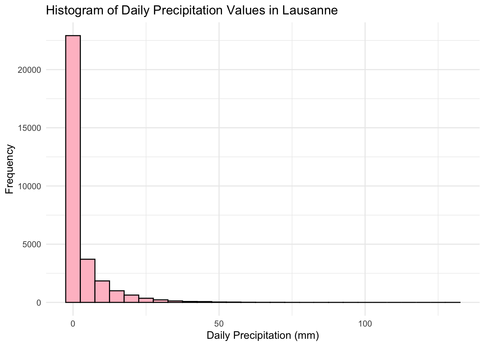
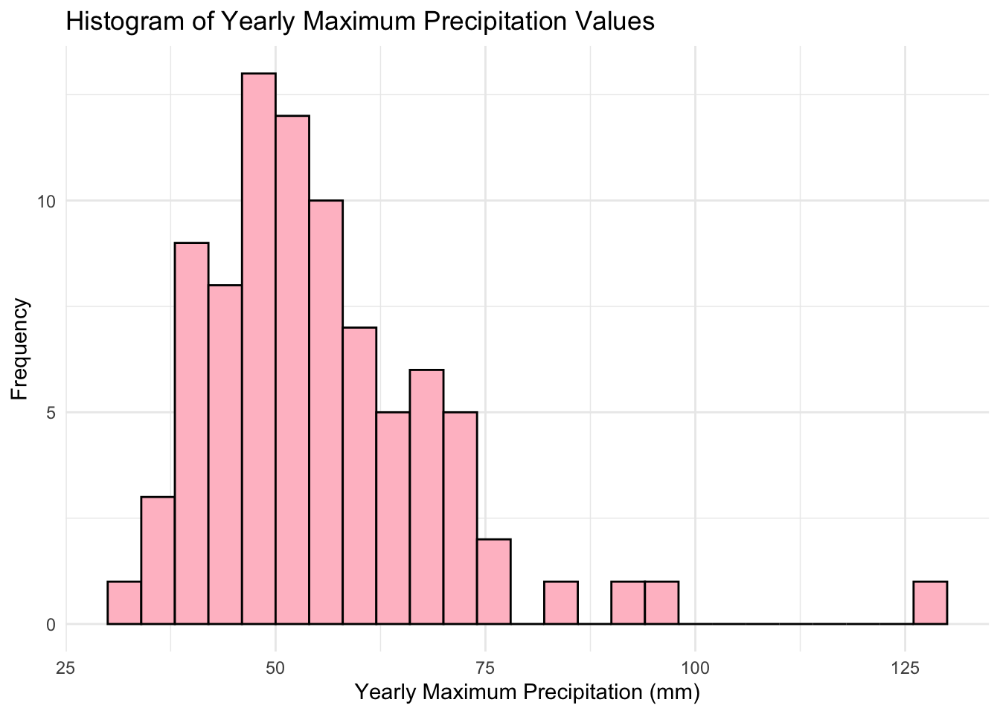
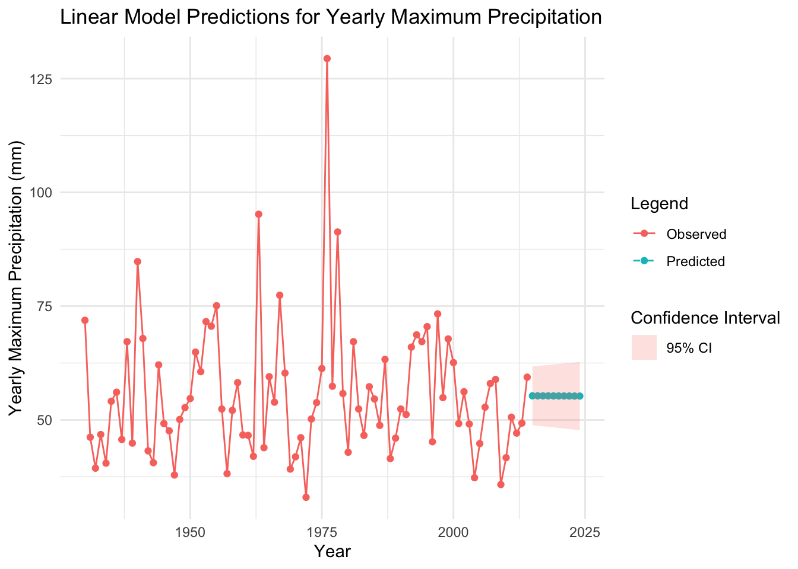
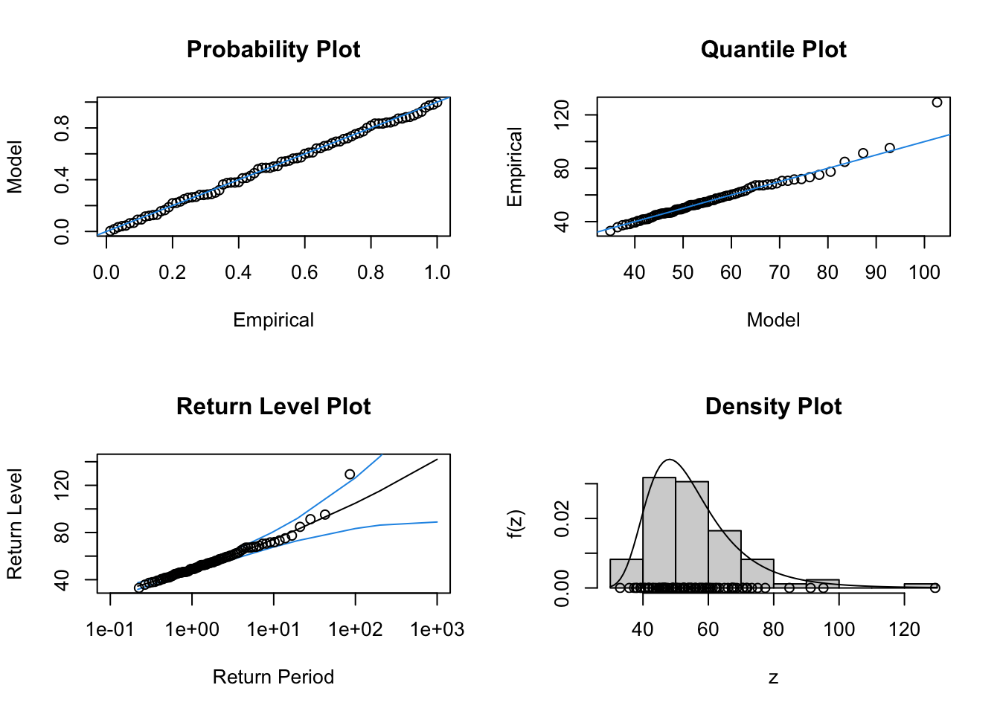
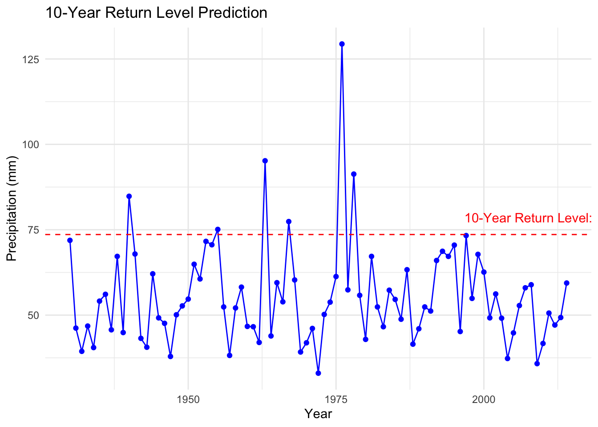

data_clean_df <- read.csv(here::here("data", "Precipitation_lausanne_full.csv"))
data_clean_df$Date <- as.Date(data_clean_df$Date, format = "%m/%d/%Y")
data_clean_df$Precipitation <- as.numeric(data_clean_df$Precipitation)
data_clean_df <- na.omit(data_clean_df)Practical 2: Weather
Part 1: Block maxima approach
a) Best fit distribution

Based on the histogram, the data is heavily skewed to the right. The majority of the precipitation values are concentrated around zero and a long tail for higher values. There are many small precipitation events and a few extreme ones.
The distribution that will best fit the data is the gamma distribution and Weibull. Gamma and Weibull distributions are usually used in meteorological processes such as precipitation quantities.
b) Best fit distribution on yearly maxima
# Extract yearly maximum values
data_clean_df$Year <- format(data_clean_df$Date, "%Y")
yearly_max <- aggregate(Precipitation ~ Year, data = data_clean_df, max)
Based on the characteristics of the data (yearly maxima and right-skewed nature), the Generalised Extreme Value (GEV) distribution seems to be the best fit. The GEV distribution is designed to model extreme values like yearly maxima and can accommodate the heavy-tailed nature of the data, where a few large values are observed but are rare.
c) Linear model approach
# Fit linear model
linear_model <- lm(Precipitation ~ as.numeric(Year), data = yearly_max)
summary(linear_model)
Call:
lm(formula = Precipitation ~ as.numeric(Year), data = yearly_max)
Residuals:
Min 1Q Median 3Q Max
-22.562 -9.468 -3.003 6.366 73.862
Coefficients:
Estimate Std. Error t value Pr(>|t|)
(Intercept) 67.628665 129.238156 0.523 0.602
as.numeric(Year) -0.006119 0.065532 -0.093 0.926
Residual standard error: 14.82 on 83 degrees of freedom
Multiple R-squared: 0.000105, Adjusted R-squared: -0.01194
F-statistic: 0.008718 on 1 and 83 DF, p-value: 0.9258# Predict for next 10 years
future_years <- data.frame(Year = as.numeric(2015:2024))
predictions <- predict(linear_model, newdata = future_years, interval = "confidence")
The very high p-value (0.9258 < 0.05) shows that the slope of the regression line is not statistically significant. There is no evidence that the year has a significant effect on yearly maximum precipitation in this dataset. Additionally, the predictions show little change in yearly maximum precipitation over the next 10 years.
d) GEV distribution
# Fit GEV models
gev_model_const <- fevd(yearly_max$Precipitation, type = "GEV", method = "MLE")
gev_model_timevar <- fevd(yearly_max$Precipitation, type = "GEV", method = "MLE", loc = ~as.numeric(yearly_max$Year))
# Compare models
summary(gev_model_const)
fevd(x = yearly_max$Precipitation, type = "GEV", method = "MLE")
[1] "Estimation Method used: MLE"
Negative Log-Likelihood Value: 333.4716
Estimated parameters:
location scale shape
48.92359210 9.97201455 0.08320297
Standard Error Estimates:
location scale shape
1.21290095 0.90493539 0.07771529
Estimated parameter covariance matrix.
location scale shape
location 1.47112872 0.5037537 -0.029757543
scale 0.50375368 0.8189081 -0.011621804
shape -0.02975754 -0.0116218 0.006039667
AIC = 672.9433
BIC = 680.2712 summary(gev_model_timevar)
fevd(x = yearly_max$Precipitation, location.fun = ~as.numeric(yearly_max$Year),
type = "GEV", method = "MLE")
[1] "Estimation Method used: MLE"
Negative Log-Likelihood Value: 333.4453
Estimated parameters:
mu0 mu1 scale shape
35.302987758 0.006933624 10.048626086 0.081998905
AIC = 674.8906
BIC = 684.6612 AIC for the constant model (672.9433 ) is lower compared to the time-varying location model (674.8906). BIC for the constant model is also lower (680.2712 ) than for the time-varying location model (684.6612). Si nce both AIC and BIC values favor the constant parameter model, this suggest that the GEV model with constant parameters is the preferred model for fitting the yearly maximum precipitation data in Lausanne.
e) Diagnostic plots
gev_model_const_diag <- gev.fit(yearly_max$Precipitation)$conv
[1] 0
$nllh
[1] 333.4716
$mle
[1] 48.92521354 9.97227559 0.08329645
$se
[1] 1.21298615 0.90492024 0.07773763gev.diag(gev_model_const_diag)
Probability Plot: Since most points lie close to the line, it suggests that the GEV model is reasonably capturing the general behavior of the precipitation extremes.
Quantile Plot: The majority of the points are also close to the diagonal line, it indicates a good fit.
Return Level Plot: The data points generally follow the fitted line, and most fall within the confidence intervals.
Density Plot: The histogram and density overlay indicate that the fitted GEV distribution aligns with the observed data distribution, although there may be sligh deviations at the tail.
Conclusion: the GEV model with constant parameters provides a reasonably good fit for the yearly maximum precipitation values in Lausanne.
f) Return levels prediction
# Calculate 10-year return level
return_period <- 10
return_level <- return.level(gev_model_const, return.period = return_period)
The plot displays the yearly maximum precipitation in Lausanne over time, with the 10-year return level of 73.61mm marked by a red dashed line. This return level indicates the precipitation level that is expected to be exceeded once every 10 years.
g) Interpretation
# Extract GEV parameters directly from the model
location <- gev_model_const$results$par[1] # Location parameter
scale <- gev_model_const$results$par[2] # Scale parameter
shape <- gev_model_const$results$par[3] # Shape parameter# Extract GEV parameters from the constant model
location <- gev_model_const$results$par[1]
scale <- gev_model_const$results$par[2]
shape <- gev_model_const$results$par[3]
# Define return periods
return_periods <- c(10, 20, 50, 85)
# Function to calculate return levels for each period
calculate_return_level <- function(return_period) {
location + (scale / shape) * ((-log(1 - 1 / return_period))^(-shape) - 1)
}
# Calculate return levels
return_levels <- sapply(return_periods, calculate_return_level)
# Display return levels
names(return_levels) <- paste(return_periods, "year return level")
print(return_levels)10 year return level 20 year return level 50 year return level
73.60265 82.52333 94.89274
85 year return level
102.43790 # Count how many yearly maximum values exceed each return level
exceedances <- sapply(return_levels, function(level) sum(yearly_max$Precipitation > level))
# Display exceedance counts
exceedances10 year return level 20 year return level 50 year return level
6 4 2
85 year return level
1 Each year, there is 1/10 chance of exceeding the 10-year return level of 73.61 mm based on the GEV model, with 6 historical exceedances aligning with this probability.
The GEV approach accurately captures the rarity of extreme events, providing 20, 50, and 85-year return levels (82.53 mm, 94.90 mm, and 102.45 mm, respectively), with 4, 2, and 1 exceedances observed for each.
In contrast, the linear model lacks the specificity to estimate extreme events reliably, as it doesn’t account for tail behavior. The GEV model’s results match expected exceedance frequencies, validating its effectiveness for extreme precipitation analysis.
h) Return period 100 mm precipitation
# Desired precipitation level
precipitation_level <- 100
# Calculate the return period for 100 mm of precipitation
return_period_100mm <- 1 / (1 - exp(-((precipitation_level - location) / scale * shape + 1)^(-1 / shape)))
cat("The return period for a 100 mm precipitation event is approximately:", return_period_100mm, "years\n")The return period for a 100 mm precipitation event is approximately: 71.77507 yearsThe return period for a 100 mm precipitation event is approximately: 71.70624 years
i) Probability of exceeding 150 mm
# Desired precipitation threshold
precipitation_threshold <- 150
# Compute the probability of exceeding 150 mm in a given year
prob_exceed_150mm <- 1 - exp(-((precipitation_threshold - location) / scale * shape + 1)^(-1 / shape))
cat("The probability of a precipitation event exceeding 150 mm in the next year is approximately:", prob_exceed_150mm * 100, "%\n")The probability of a precipitation event exceeding 150 mm in the next year is approximately: 0.06420734 %The probability of a precipitation event exceeding 150 mm in the next year is approximately: 0.0643559 %